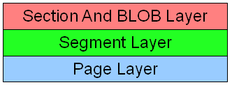
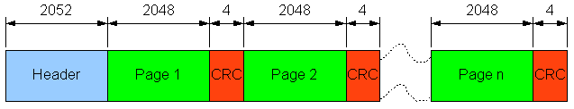
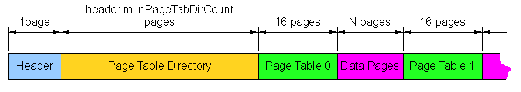
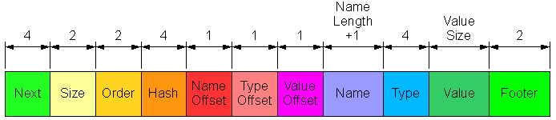

The data of each file can be considered on 3 separate layers:
| Page | Basic unit of data, that can be loaded or stored to file (2048 bytes) |
| Segment | Logical sequence of pages (not neccessarily adjacent), that can be understood as a file in file |
Each layer can be treated by a black box by others.

Pages are the atomic units of data, that are read or written to database file. Each page has an associated CRC code, which follows the data itself. Besides the simple encryption is used - pages are ciphered by XOR-ing by a variable length key (64-128 bytes), that is stored in file header. It is rather primitive algorithm, but sophisticated enough to make containing strings unable to be understood while direct file viewing. The file header is stored in page 0, but it is managed differently, than other pages. First its CRC is not stored after the whole page, but directly follows the header. Seconds the header is not encrypted, because the header itself contains the key. When any page is requested to be read, the whole group of 16 pages is prefetched and cached. While storing the adjacent pages are merged into groups, but not exceeding 16 pages.

In case of in-memory and temporary storage the situation looks a litte differently. There is neither CRC computing nor encrypting in this case. In assumption these kinds of storage are not persistent, so data durability need not to be guaranted, but they should be as efficient as possoble.
Segments are the logical, variable sized sequences of pages. Each member page has anumber relative to segment regardless of its absolute position within file. In order segments also have number identifiers. Generally the numbers are dynamically allocated while segment creation excluding reserved numbers.
#define SEGID_RESERVED 0x00FFFFFF #define SEGID_TABLE 0x00FFFF01 #define SEGID_SEGMENTDIR 0x00FFFF02 #define SEGID_SECDATA 0x00FFFF03
The page relative order numbers within segments must be in any way translated into absolute order numbers in file. It is the task of Page Tables together with Page Table Directory. Each absolute page (let us name it "A") has an associated entry in corresponding Page Table. This entry contains absolute address of page A's successor within segment or value 0, when page A is the last within segment. Each Page Table has 4096 entries. To match a proper table - the absolute page number is divided by 4096, the result is an index into Page Table Directory. The corresponding entry in the directory is an absolute number of first page of the proper Page Table.

Each page of section's segment is divided into data blocks used by items. Each item occupies a single block. In fact sections contain not subsections itself, but numeric identifiers of their segments. The same situation is in case of BLOBs. But blocks can not neccessarily contain items, they can be empty. Moreover each new page allocated to segment is treated as a large free block. When a block is not associated any item, the type offset field iType contains a specific value instad (see below)
#define TBVITYPE_NOTUSED 0 #define TBVITYPE_RESERVED 1 #define TBVITYPE_DELETED 2
In order to allocate block for new item, the first free block is splitted (in current implementation on the last page), or allocated itself, when the size is matching. The size is adjusted to 24 multiple of Fibonacci number. When any item is deleted its block is marked as free and possibly consolidated with adjacent free blocks. To find the beginning of the previous block each block has a 2-byte footer. It contains the offset of block beginning.
The first data block of each section segment contains a section header. Its size is 1008, the iType field is marked as TBVITYPE_RESERVED. This table has 241 entries, each of them contains the pointer to the first item, that matches the hash (computed from name) criteria. Each of them contains in order pointer to the next item and so on. The pointer consists on 32 bytes; higher 16 bits represent the page number relative to segment, the lower 16 ones are the offset within page. The order number distinguishes items that have the same hash value (besides name).
